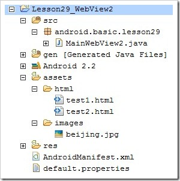

WebView学习指南
本讲内容：WebView的使用方法
今天我们来学习一个可以显示网页的控件WebView。WebView的网页渲染引擎和Safari、Chrome一样都是Webkit。使用WebView进行互联网程序开发有以下优点：
1、可以打开远程网址、也可以加载本地Html数据。
2、可以搭建Java和Javascript交互桥梁。
3、WebView控件可以高度定制。
下面我们通过几个例子来共同学习WebView的使用方法。
一、先做一个例子热热身看看效果
1、先来一个简单的例子，新建一个项目Lesson29_WebView
<?xml version="1.0" encoding="utf-8"?><manifest xmlns:android="http://schemas.android.com/apk/res/android
package="android.basic.lesson29
android:versioncode="1
android:versionname="1.0" >
<application
android:icon="@drawable/icon
android:label="@string/app_name" >
<activity
android:name=".MainWebView
android:label="@string/app_name" >
<intent filter="" >
<action android:name="android.intent.action.MAIN" >
<category android:name="android.intent.category.LAUNCHER" >
</category>
</action>
</intent>
</activity>
</application>
<uses
sdk=""
android:minsdkversion="8" >
<uses
android:name="android.permission.INTERNET
permission="" >
</uses>
</uses>
</manifest>
3、在res/layout/main.xml中放置一个输入框，一个按钮和一个WebView：
<?xml version="1.0" encoding="utf-8"?>
4、在Activity文件的OnCreate方法中默认载入一个百度页面，点击按钮时载入预设的网址http://android.yaohuiji.com :
import android.app.Activity;import android.os.Bundle;
import android.view.View;
import android.webkit.WebView;
import android.widget.Button;
import android.widget.EditText;
public class MainWebView extends Activity {
WebView mWebView;
@Override
public void onCreate(Bundle savedInstanceState) {
super.onCreate(savedInstanceState);
setContentView(R.layout.main);
// 定义UI组件
mWebView = (WebView) findViewById(R.id.WebView01);
Button b1 = (Button) findViewById(R.id.Button01);
final EditText et = (EditText) findViewById(R.id.EditText01);
// 得到WebSetting对象，设置支持Javascript的参数
mWebView.getSettings().setJavaScriptEnabled(true);
// 载入URL
mWebView.loadUrl("http://www.baidu.com");
// 使页面获得焦点
mWebView.requestFocus();
// 给按钮绑定单击监听器
b1.setOnClickListener(new View.OnClickListener() {
@Override
public void onClick(View v) {
// 访问编辑框中的网址
mWebView.loadUrl(et.getText().toString());
}
});
}
}
5、运行程序，查看效果：

点击Go按钮，可以看到本博客出现，不过没有经过任何缩放处理，在接下里的例子我们继续研究，如何做更多的控制。

二、补充一点基础知识：关于WebSettings
1、先看一下WebView的继承关系，可以看到它不是在 android.widget包中，而是在android.webkit包中。
java.lang.Object|_android.view.View
|_android.view.ViewGroup
|_android.widget.AbsoluteLayout
|_android.webkit.WebView
2、WebSettings ： WebView组件有一个辅助类叫WebSettings，它管理WebView的设置状态。该对象可以通过WebView.getSettings()方法获得。下面举几个例子来说明WebSettings的用法：
//得到WebSettings对象，设置支持Javascript的参数mWebView.getSettings().setJavaScriptEnabled(true);
//设置可以支持缩放
mWebView.getSettings().setSupportZoom(true);
//设置默认缩放方式尺寸是far
mWebView.getSettings().setDefaultZoom(WebSettings.ZoomDensity.FAR);
//设置出现缩放工具
mWebView.getSettings().setBuiltInZoomControls(true);
三、加载assets目录下的本地网页
WebView调用assets目录下的本地网页和图片等资源非常方便，使用形如wv.loadUrl("file:///android_asset/html/test1.html");的调用方法即可，代码在第四段落里。

在test1中点击链接也可以跳转到test2

四、使用 LoadData 方法加载内容
可以在Java文件中或者XML文件中定义HTML的片段，也可以在assets目录中存放HTML文件，然后使用LoadData加载其中的内容，展示出来。下面我们使用第三部分的网页来演示一下如何使用LoadData方法，并且看看他们之间的区别。
1、新建项目Lesson29_WebView2
2、新建2个Html文件在assets/html下，内容略去，res/layout/main.xml的内容也略去了，相信对你来说已经不成问题。
3、MainWebView2.java 的内容如下：
import java.io.IOException;import java.io.InputStream;
import org.apache.http.util.ByteArrayBuffer;
import org.apache.http.util.EncodingUtils;
import android.app.Activity;
import android.os.Bundle;
import android.view.View;
import android.webkit.WebView;
import android.widget.Button;
public class MainWebView2 extends Activity {
@Override
public void onCreate(Bundle savedInstanceState) {
super.onCreate(savedInstanceState);
setContentView(R.layout.main);
// 定义UI组件
Button b1 = (Button) findViewById(R.id.Button01);
Button b2 = (Button) findViewById(R.id.Button02);
final WebView wv = (WebView) findViewById(R.id.WebView01);
// 定义并绑定按钮单击监听器
b1.setOnClickListener(new View.OnClickListener() {
@Override
public void onClick(View v) {
// 加载URL assets目录下的内容可以用 "file:///android_asset" 前缀
wv.loadUrl("file:///android_asset/html/test1.html");
}
});
// 定义并绑定按钮单击监听器
b2.setOnClickListener(new View.OnClickListener() {
@Override
public void onClick(View v) {
String data = "";
try {
// 读取assets目录下的文件需要用到AssetManager对象的Open方法打开文件
InputStream is = getAssets().open("html/test2.html");
// loadData()方法需要的是一个字符串数据所以我们需要把文件转成字符串
ByteArrayBuffer baf = new ByteArrayBuffer(500);
int count = 0;
while ((count = is.read()) != -1) {
baf.append(count);
}
data = EncodingUtils.getString(baf.toByteArray(), "utf-8");
} catch (IOException e) {
e.printStackTrace();
}
// 下面两种方法都可以加载成功
wv.loadData(data, "text/html", "utf-8");
// wv.loadDataWithBaseURL("", data, "text/html", "utf-8", "");
}
});
}
}
4、运行程序单击第二个按钮，效果如下：

对比上面的例子，我们可以看到两个明显的区别，其一，图片没加载出来，其二链接失效，点击后无法加载test1.html 。
五、两个和WebView相关的重要对象：WebChromeClient和WebViewClient和WebView相关的辅助对象，除了WebSettings以外还有WebChromeClient和WebViewClient。接下来的这个例子内容比较丰富，虽然注释比较清晰，但是您一次消化起来还是比较困难的，因此您需要的是一点点耐心，多看几遍，最重要的是自己至少敲代码敲一遍。